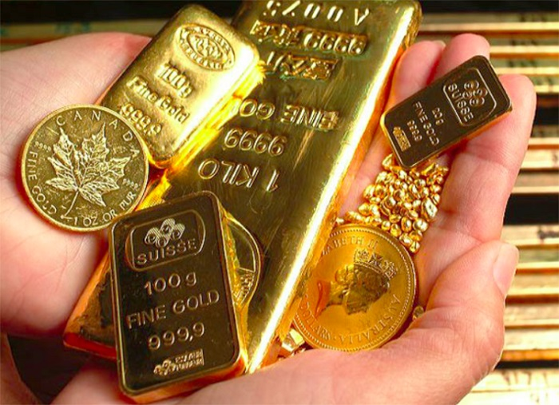

Giá vàng thế giới chốt phiên ở mức 1.899 USD/ounce, giảm 31 USD/ounce so với chốt phiên tuần trước. Như vậy sau 1 tuần, giá vàng đã giảm khoảng 1%. Chiến lược gia thị trường cấp cao của LaSalle Futures Group, Charlie Nedoss cho biết ông vẫn lạc quan về vàng khi giá đã cố gắng thoát khỏi mức hỗ trợ tại đường trung bình di động 100 ngày. “Vàng chưa đóng cửa dưới mức trung bình di động 100 ngày của nó và chừng nào điều đó còn giữ được thì vẫn có thể lạc quan", ông nói. Trong số những chuyên gia Phố Wall tham gia cuộc khảo sát hàng tuần của Kitco, có 63% ủng hộ xu hướng tăng giá, chỉ 13% cho rằng vàng sẽ giảm và 25% cho rằng vàng đi ngang. Đối với kết quả khảo sát trực tuyến trên thị trường, 57% nhà đầu tư cũng dự đoán giá vàng sẽ tăng, 21% dự đoán vàng sẽ giảm và 22% nhà đầu tư giữ quan điểm trung lập. George Milling-Stanley, chiến lược gia tại State Street Global Advisors nhận định, mặc dù thị trường vàng không đi nhanh, nhưng điều quan trọng các nhà đầu tư cần chú ý là giá kim loại quý đã đi bao xa trong năm nay? Tính từ đầu năm 2020 đến thời điểm hiện tại, giá vàng đã tăng gần 25% trong năm. “Đó là một màn trình diễn tuyệt vời và các yếu tố khiến vàng đạt mức cao nhất mọi thời đại trong tháng 8 vẫn chưa biến mất. Thế giới vẫn còn nhiều bất ổn, về mặt vĩ mô, kinh tế và chính trị. Do đó, vàng có nhiều tiềm năng để tăng giá cao hơn nữa", ông George Milling-Stanley nhấn mạnh.
Tại thị trường trong nước, sáng nay, Công ty Vàng bạc đá quý Sài Gòn niêm yết giá vàng SJC mua vào bán ra ở mức 55,82-56,29 triệu đồng/lượng. Vàng Doji niêm yết giá vàng ở mức 55,85-56,2 triệu đồng/lượng. Phú Quý SJC niêm yết giá vàng ở mức 55,45-56,2 triệu đồng/lượng.